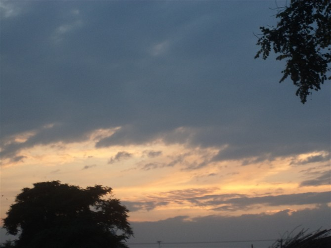
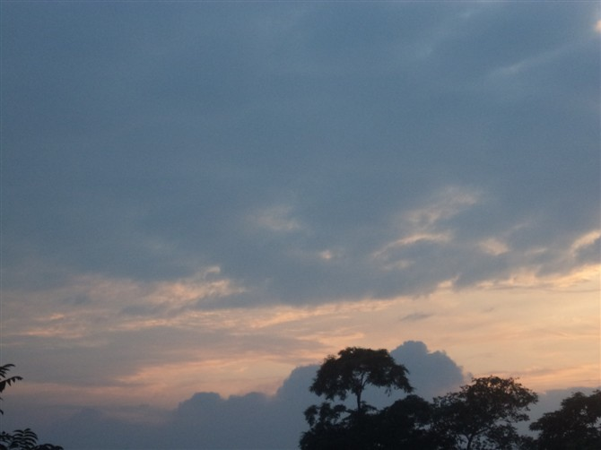
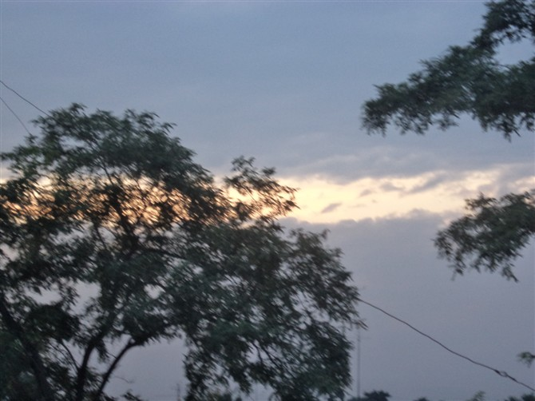

日落的景色
首页
抱朴守静
#1 日落的景色 作者：蓝天蓝 发表时间：2011-9-25 17:50:57
日落的景色


#2 Re:日落的景色 作者：真树 发表时间：2011-9-25 21:58:31
还真发了日落的啊 推荐楼主一部电影 确切说是两部连一起的《日出之前》和《日落之前》
#3 Re:Re:日落的景色 作者：蓝天蓝 发表时间：2011-9-26 10:55:28
昨天网速不好，上传速度慢，今天接着上传完成





#4 Re:日落的景色 作者：蓝天蓝 发表时间：2011-9-26 10:56:15
谢谢2楼推荐的电影，有空看看